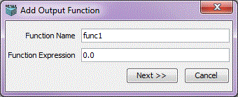
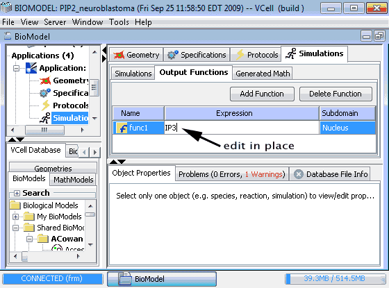

Output Functions
Output functions are user defined functions for simulation results in a biomodel application or math model.
Output Functions are saved with the model and available for viewing in all simulations in the containing application or math model.
Output functions are defined as vcell expressions. Symbols that can be used in the expression of an output function are:
- t
- x, y, z : spatial models only
- model variables
- vcell predefined mathematical functions
- previously defined output functions
After an output function is added, it will be automatically added to all simulation result viewers.
In spatial models, output functions are defined in a specific subdomain, either in a volume or on a membrane. This determines the function type of an output function.
In subdomains where an output function is not defined, Gray color will be displayed with "Undefined" as the value in results viewer.
- Add Function
In a non-spatial biomodel application or math model, click Add Function button to add an output function.
After editing the name and expression (autocomplete help is available to list the possible variables that can be used in the expression), click the Finish button to add the function.
Clicking Cancel button will cancel the operation.

In a spatial biomodel application or math model, click Add Function button to add an output function.
After providing name and expression, click Next to go to the next panel that allows the user to choose where the function is to be defined.
The drop down menu with the Defined in label lists the possible options (domains in the geometry) where the function can be defined.
Choose the domain where the function should be defined and click Finish to add the function.
To change the name or expression of the function, click the Previous button. To cancel the add operation, click Cancel.


- Delete Function
Select a function in the table, click "Delete Function" button to delete a function.
- Edit Expression
After a function is added, expression can be changed by double clicking the expression column.

Remember to save the model after a function is added or deleted.